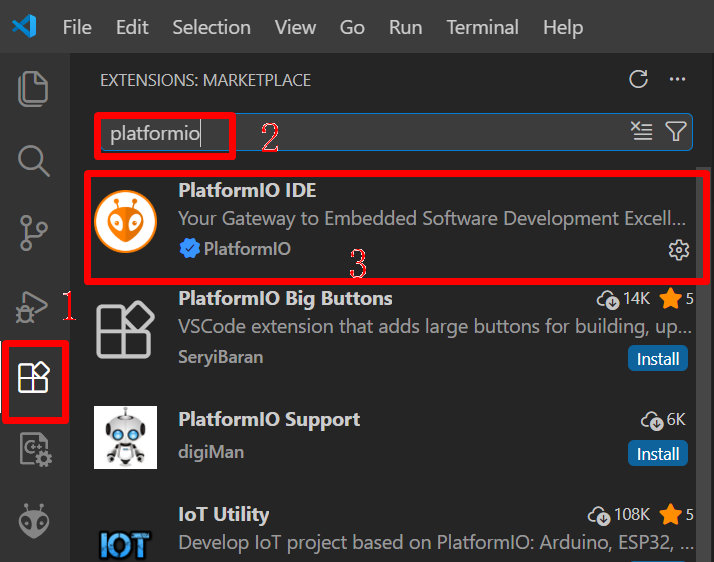
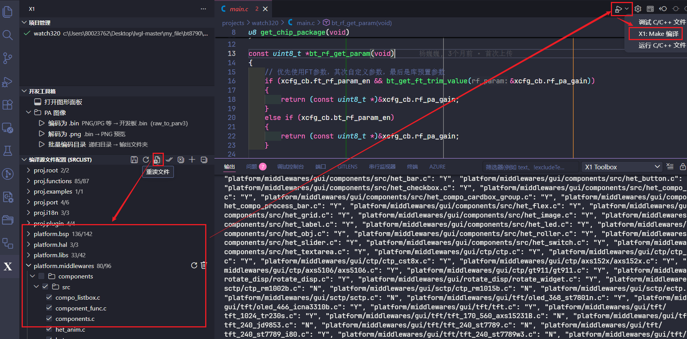
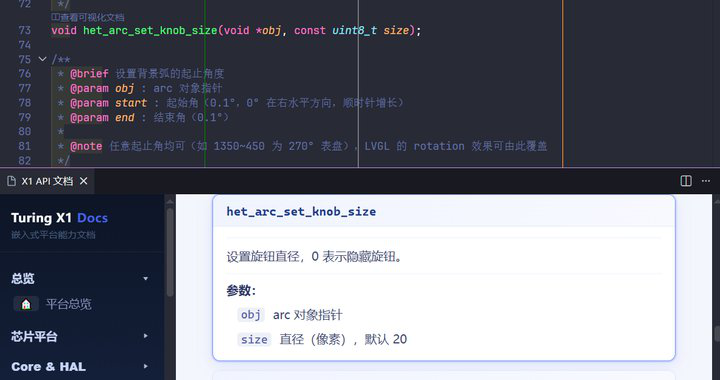

VS Code development workflow
VS Code is used to browse the project, select source modules, compile, flash, and locate APIs. The basic environment installation still follows Environment Installation and Project Compilation. This page supplements the graphical development process and plugin boundaries.
Note
The ‘Turing Platform User Manual’ marks the full HeT IDE capabilities as to be released by the end of 2026. Commands, scripts, and configurations that can be used directly in the current repository take precedence over planned screenshots; entrances not appearing in the current plugin should not be considered delivered.
Installation and Plugins
Install VS Code and Git, and ensure the command line can run the Python, compiler, and build tools required by the project.
Install PlatformIO IDE online for auxiliary capabilities such as the serial terminal; project compilation is still executed according to the repository scripts.
If the team has provided the
.vsixpackage of the HeT Plugin, import it via ‘Install from VSIX’ and ensure the plugin version matches the SDK.Open the root directory of the repository, not just a single
projectssubdirectory, otherwise the plugin cannot obtain the complete platform index.


Project and Source Configuration
Project configuration is used to select the target project, board-level implementation, HAL, CBB, GUI components, third-party libraries, and functional modules. After modifying the configuration, first check the differences, then regenerate dependency files; do not directly copy pins, screen, or storage configurations from another board to the current project.

Recommended work sequence:
Select Project: Ensure
projects/<project>matches the actual development board.Select Modules: Enable the required BSP, HAL, GUI, CBB, and libraries, and check dependencies.
Regenerate: Run the configuration generation action and check the generated results like
inclist.mk.Compile: Call the project Make target from the task or toolbar, and address the first compile error first.
Flash and Observe: Confirm the download port and target board, and verify the startup stage with serial logs.
Compilation and Diagnostics

When compilation fails, locate issues in the following order:
Header File Not Found: Check if the module is enabled, whether the include path is in the project, and the case of the file name.
Undefined Reference: Ensure implementation files are added to the source list, and that library versions and configuration macros match the declarations.
Linker Overflow: Check the map file, reduce resident code or unnecessary resources in
.com, refer to Chip architecture and memory.No Output After Flashing: Check power supply, boot pins, serial instance/baud rate, and board-level configuration; do not assume it is an application logic issue first.
API Help
The plugin planning supports jumping from symbols to local API help. In the current documentation site, the public intra- and extra-chip interface uniformly starts from Peripheral HAL (on-chip peripherals); function declarations, parameters, and return values are based on content generated by Doxygen from the current header file.

Pre-submission Check
Fully compile the target project and save the original log of the first failure.
Check whether the configuration, source list, and resources only include changes required for this feature.
Verify cold start, reset, low power, and critical peripheral paths on real hardware.
When adding new public interfaces, complete the Doxygen comments and rebuild the documentation.